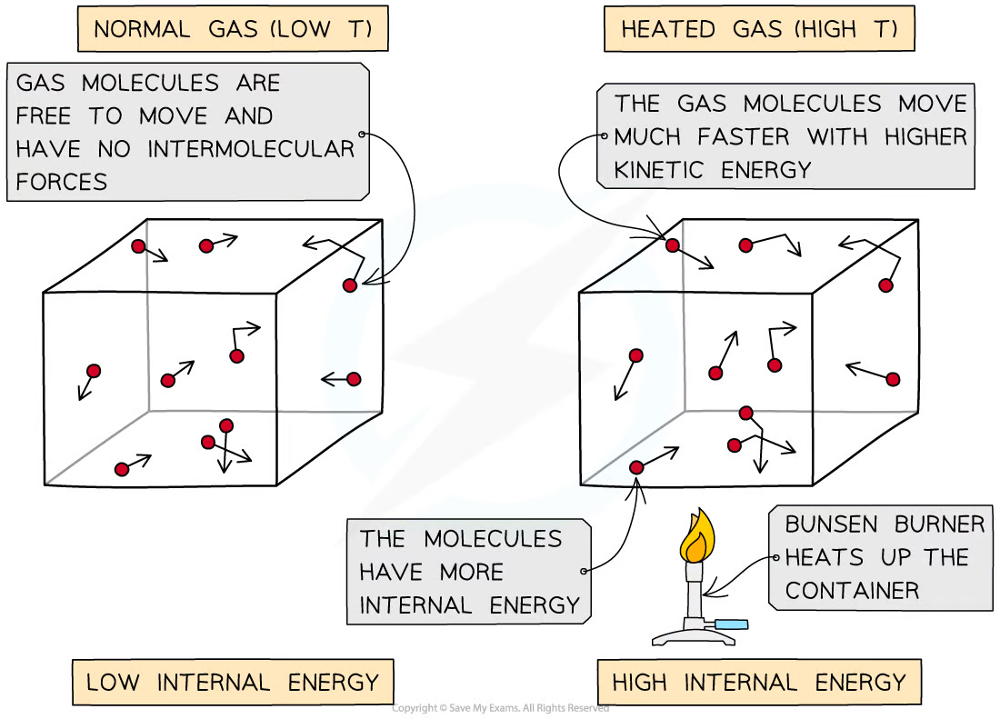
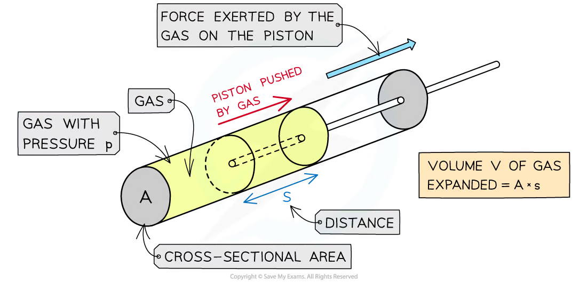
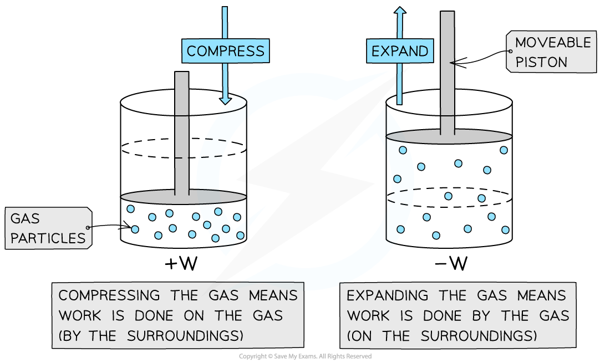
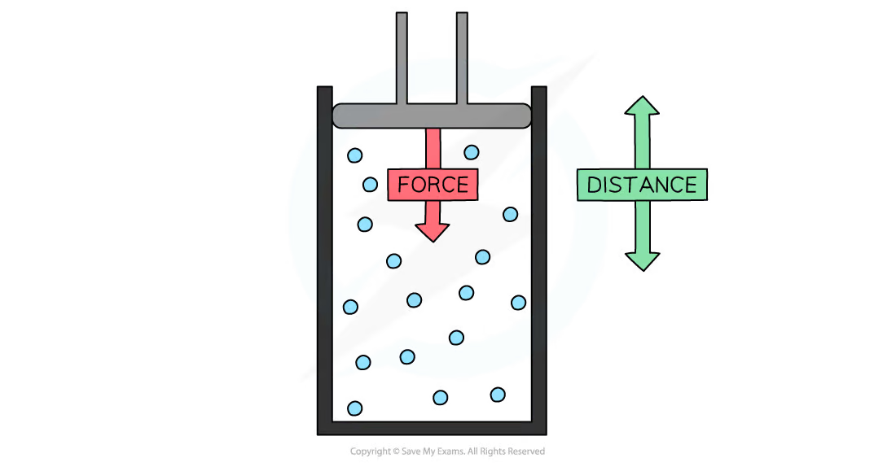
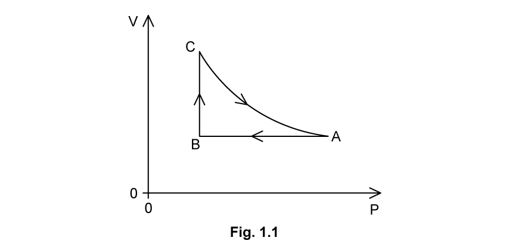
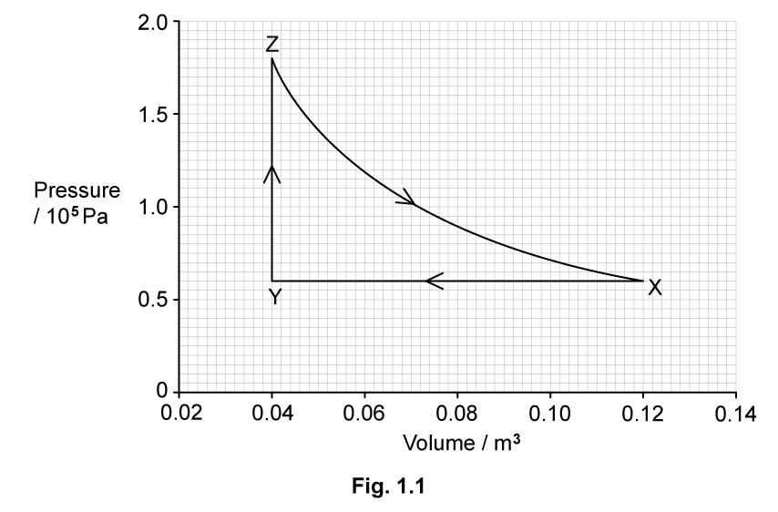

16 Thermodynamics
Internal energy, work done by gases and the first law of thermodynamics
Learning objectives
By the end of this chapter, you should be able to:
- define internal energy as the random distribution of molecular kinetic and potential energies;
- explain how temperature and phase affect internal energy;
- calculate work done during a constant-pressure volume change using \(W=p\Delta V\);
- distinguish work done by a gas from work done on a gas;
- use the sign convention in \(\Delta U=q+W\);
- apply the first law of thermodynamics to heating, compression, expansion and changes of state;
- interpret thermodynamic cycles and pressure-volume diagrams.
16.1 Internal energy
Definition and state of a system
Internal energy \(U\) is the sum of the random distribution of kinetic and potential energies associated with the molecules of a system. It is measured in joules.
Internal energy is a state function: its value is determined by the present state of the system, not by the path used to reach that state. Therefore, after a complete cycle that returns a system to its initial state,
\[\Delta U_{\mathrm{cycle}}=0.\]
Molecular kinetic and potential energies
Molecular kinetic energy includes random translational, rotational and vibrational motion. Raising temperature increases average molecular kinetic energy, so it generally increases internal energy.
Molecular potential energy depends on intermolecular separation and forces. During melting or vaporisation, temperature may remain constant while molecular separation increases. Kinetic energy then remains approximately constant, but potential energy and internal energy increase.
For a solid cooling without changing state, the arrangement and molecular potential energy are approximately unchanged, while vibrational kinetic energy decreases.

For a fixed state, increasing temperature increases the random molecular kinetic energy and therefore the internal energy.
Internal energy of an ideal monatomic gas
An ideal gas is modelled as having no intermolecular potential energy. Its internal energy is therefore the total random translational kinetic energy:
\[U=\frac32NkT=\frac32nRT.\]
For a fixed amount of ideal monatomic gas,
\[\Delta U=\frac32Nk\Delta T=\frac32nR\Delta T.\]
Thus internal energy depends only on thermodynamic temperature. A change in Celsius temperature has the same numerical size as the corresponding change in kelvin.
Worked Example 1 · Change in internal energy of an ideal gas
Two moles of an ideal monatomic gas are heated from \(250\ \mathrm{K}\) to \(350\ \mathrm{K}\). Calculate the increase in internal energy. Take \(R=8.31\ \mathrm{J\,mol^{-1}\,K^{-1}}\).
Solution
The temperature change is \(\Delta T=100\ \mathrm{K}\).
Use \(\Delta U=\frac32nR\Delta T\):
\[\Delta U=\frac32(2)(8.31)(100)=2.49\times10^3\ \mathrm{J}.\]
Answer: the internal energy increases by \(2.49\ \mathrm{kJ}\).
16.2 Work done by and on a gas
Constant-pressure work
When a gas expands against a constant external pressure \(p\), it pushes a piston or the atmosphere through a distance. The magnitude of the work is
\[W=p\Delta V.\]
This follows from \(W=Fs\), \(p=F/A\) and \(\Delta V=As\).
The pressure in this equation is the external pressure opposed by the expanding gas. The equation in this form applies directly when pressure is constant.

For a piston of cross-sectional area \(A\) moving distance \(s\), the volume change is \(\Delta V=As\) and the work is \(W_{\mathrm{by}}=p\Delta V\).
Worked Example 2 · Work done during expansion
A gas expands at a constant external pressure of \(1.5\times10^5\ \mathrm{Pa}\) from \(2.0\times10^{-3}\ \mathrm{m^3}\) to \(4.0\times10^{-3}\ \mathrm{m^3}\). Calculate the work done by the gas and the work done on the gas.
Solution
Find the volume change:
\[\Delta V=4.0\times10^{-3}-2.0\times10^{-3}=2.0\times10^{-3}\ \mathrm{m^3}.\]
Work done by the gas:
\[W_{\mathrm{by}}=p\Delta V=(1.5\times10^5)(2.0\times10^{-3})=300\ \mathrm{J}.\]
With the chapter sign convention, work done on the gas is the negative of this value:
\[W_{\mathrm{on}}=-300\ \mathrm{J}.\]
Answer: \(300\ \mathrm{J}\) is done by the gas and \(W_{\mathrm{on}}=-300\ \mathrm{J}\).
Sign convention used in this chapter
The syllabus writes the first law using \(W\) as the work done on the system:
- compression: work is done on the gas, so \(W>0\);
- expansion: work is done by the gas on the surroundings, so \(W<0\);
- no volume change: \(W=0\).
For a constant-pressure change,
\[W_{\mathrm{on}}=-p(V_f-V_i).\]
Therefore an expansion has negative \(W_{\mathrm{on}}\), while compression has positive \(W_{\mathrm{on}}\).

Compression transfers energy to the gas by work, while expansion transfers energy from the gas to the surroundings.
Pressure-volume diagrams
On a graph of pressure \(p\) against volume \(V\), the magnitude of work done by a gas is the area under the process curve:
\[W_{\mathrm{by}}=\int p\,dV.\]
For a constant-pressure process, this is a rectangle of area \(p\Delta V\). For a complete cycle, the enclosed area gives the net work done during the cycle. Internal energy still returns to its initial value because it depends only on state.

Pressure is the macroscopic effect of microscopic forces and momentum transfer at the boundaries of the gas.
Worked Example 3 · Work in a rectangular p-V cycle
An ideal gas follows a clockwise rectangular cycle between pressures \(1.0\times10^5\) and \(3.0\times10^5\ \mathrm{Pa}\), and volumes \(1.0\times10^{-3}\) and \(3.0\times10^{-3}\ \mathrm{m^3}\). Find the net work done by the gas in one cycle and the net work done on the gas.
Solution
The enclosed area on the p-V diagram is
\[W_{\mathrm{by,net}}=\Delta p\,\Delta V =(2.0\times10^5)(2.0\times10^{-3})=400\ \mathrm{J}.\]
A clockwise cycle has positive net work done by the gas. Therefore,
\[W_{\mathrm{on,net}}=-400\ \mathrm{J}.\]
Because the gas returns to its initial state, \(\Delta U_{\mathrm{cycle}}=0\) and the net heating supplied is \(q_{\mathrm{net}}=400\ \mathrm{J}\).
Answer: net work done by the gas is \(400\ \mathrm{J}\); net work done on the gas is \(-400\ \mathrm{J}\).
The first law of thermodynamics
Energy conservation
The first law of thermodynamics is
\[\Delta U=q+W,\]
where:
- \(\Delta U\) is the increase in internal energy of the system;
- \(q\) is energy transferred to the system by heating;
- \(W\) is work done on the system.
All three quantities are measured in joules.
Reading the signs
Use the following signs consistently:
| Process | Sign |
|---|---|
| energy supplied to the system by heating | \(q>0\) |
| energy removed from the system by cooling | \(q<0\) |
| work done on the system by compression | \(W>0\) |
| work done by the system during expansion | \(W<0\) |
| internal energy increases | \(\Delta U>0\) |
| internal energy decreases | \(\Delta U<0\) |
Write the physical direction of each energy transfer before substituting numbers. This prevents most sign errors.
Worked Example 4 · Applying the first law
During a compression, \(800\ \mathrm{J}\) of work is done on a gas. The gas loses \(250\ \mathrm{J}\) of energy by cooling. Calculate the change in internal energy.
Solution
Work is done on the gas, so \(W=+800\ \mathrm{J}\).
Energy is removed by cooling, so \(q=-250\ \mathrm{J}\).
Apply \(\Delta U=q+W\):
\[\Delta U=-250+800=+550\ \mathrm{J}.\]
Answer: the internal energy increases by \(550\ \mathrm{J}\).
Common processes
- Constant volume: \(W=0\), so \(\Delta U=q\).
- Adiabatic compression: \(q=0\) and \(W>0\), so internal energy and temperature increase.
- Adiabatic expansion: \(q=0\) and \(W<0\), so internal energy and temperature decrease.
- Isothermal change of an ideal gas: \(\Delta U=0\), so \(q=-W\).
- Complete cycle: \(\Delta U=0\), so net heating equals the negative of net work done on the system.
Worked Example 5 · Adiabatic compression
An insulated gas cylinder is compressed and \(450\ \mathrm{J}\) of work is done on the gas. Find \(q\) and \(\Delta U\) and state what happens to the temperature.
Solution
Insulated means no heating transfer, so \(q=0\).
Compression means \(W=+450\ \mathrm{J}\).
From the first law:
\[\Delta U=q+W=0+450=+450\ \mathrm{J}.\]
For a fixed amount of ideal gas, an increase in internal energy means an increase in temperature.
Answer: \(q=0\), \(\Delta U=+450\ \mathrm{J}\), and the gas temperature rises.
Vaporisation against external pressure
During vaporisation, heating increases molecular potential energy and the substance expands against the surroundings. With negligible initial liquid volume,
\[|W_{\mathrm{by}}|=pV_{\mathrm{vapour}},\]
and, using the chapter sign convention,
\[\Delta U=q-|W_{\mathrm{by}}|.\]
The latent heat supplied is therefore divided between increasing internal energy and doing work on the surroundings.
Worked Example 6 · Vaporisation and external work
One kilogram of water vaporises at atmospheric pressure. Take the specific latent heat of vaporisation as \(2.26\times10^6\ \mathrm{J\,kg^{-1}}\), the final steam volume as \(1.67\ \mathrm{m^3}\) and atmospheric pressure as \(1.01\times10^5\ \mathrm{Pa}\). Estimate the increase in internal energy.
Solution
The heat supplied is
\[q=mL_v=(1)(2.26\times10^6)=2.26\times10^6\ \mathrm{J}.\]
Work done by the vapour is
\[W_{\mathrm{by}}=pV=(1.01\times10^5)(1.67)=1.69\times10^5\ \mathrm{J}.\]
Using \(\Delta U=q-W_{\mathrm{by}}\):
\[\Delta U=2.26\times10^6-1.69\times10^5 =2.09\times10^6\ \mathrm{J}.\]
Answer: approximately \(2.09\times10^6\ \mathrm{J}\) increases the internal energy; the remainder does work on the surroundings.
Structured Questions
16.1 The First Law of Thermodynamics - Medium
Example 1 · Ideal-gas cycle ABCA · 16.1 SQ Medium Q1
A fixed mass of an ideal gas has a pressure \(p\) and a volume \(V\).
The gas undergoes a cycle of changes, A to B to C, as shown in Fig. 1.1.

Table 1.1 shows data for \(p\), \(V\) and \(T\) for points A, B and C.
| Point | \(p/10^5\ \mathrm{Pa}\) | \(V/10^{-3}\ \mathrm{m^3}\) | \(T/\mathrm{K}\) |
|---|---|---|---|
| A | 680 | ||
| B | 1.6 | 4.4 | 451 |
| C | 698 |
(a) State the change in internal energy \(\Delta U\) for one complete cycle, ABCA. [1 mark]
(b) Calculate the number of particles \(N\) in the gas. [2 marks]
(c) Complete Table 1.1 by filling in the missing pressures and volumes at A, B and C. [2 marks]
(d)
(i) The first law of thermodynamics of a system can be represented by the equation
\[\Delta U=q+W.\]
State, with reference to the system, what is meant by \(\Delta U\), \(q\) and \(W\). [3 marks]
(ii) Explain how the first law of thermodynamics applies to the change C to A. [2 marks]
Show mark scheme / model answer
(a)
- \(\Delta U=0\ \mathrm{J}\) because the gas returns to its initial state.
[1]
(b)
- At B, use \(pV=NkT\), so \(N=pV/(kT)\).
[1] - \(N=(1.6\times10^5)(4.4\times10^{-3})/[(1.38\times10^{-23})(451)]=1.13\times10^{23}\).
[1]
(c)
| Point | \(p/10^5\ \mathrm{Pa}\) | \(V/10^{-3}\ \mathrm{m^3}\) | \(T/\mathrm{K}\) |
|---|---|---|---|
| A | 2.4 | 4.4 | 680 |
| B | 1.6 | 4.4 | 451 |
| C | 1.6 | 6.8 | 698 |
- Read \(V_A=V_B=4.4\times10^{-3}\ \mathrm{m^3}\) and \(p_C=p_B=1.6\times10^5\ \mathrm{Pa}\) from the graph.
[1] - Use \(pV=NkT\) or \(pV\propto T\) to obtain \(p_A=2.4\times10^5\ \mathrm{Pa}\) and \(V_C=6.8\times10^{-3}\ \mathrm{m^3}\).
[1]
(d)
- (i) \(\Delta U\) is the increase in internal energy of the system; \(q\) is energy transferred to the system by heating; \(W\) is work done on the system.
[3] - (ii) From C to A, volume decreases, so positive work is done on the gas.
[1] - Temperature decreases, so internal energy decreases; the energy removed by cooling must exceed the work done on the gas.
[1]
Example 2 · A three-stage ideal-gas process · 16.1 SQ Medium Q2
(a) A fixed mass of an ideal gas is initially at a temperature of \(20\ ^\circ\mathrm{C}\).
The gas has a volume of \(0.12\ \mathrm{m^3}\) and a pressure of \(0.6\times10^5\ \mathrm{Pa}\).
State what is meant by an ideal gas. [2 marks]
(b) The gas undergoes three successive changes, as shown in Fig. 1.1.

The initial state is represented by point X. The gas is cooled at constant pressure to point X by the removal of \(24.0\ \mathrm{kJ}\) of thermal energy.
The gas is then heated at constant volume to point Z.
Finally, the gas expands at constant temperature back to its original pressure and volume at point Z. During the expansion, the gas does \(15.8\ \mathrm{kJ}\) of work.
Calculate the magnitude of the work done in kJ during the change XY. [2 marks]
Source-label note: the original text prints “to point X” and “at point Z”. The diagram and the later table identify the three paths as XY, YZ and ZX.
(c) Complete Table 1.1 to show the work done on the gas, the thermal energy supplied to the gas and the increase in internal energy of the gas, for each of the changes XY, YZ and ZX. [3 marks]
| change | increase in internal energy of gas / kJ | thermal energy supplied to gas / kJ | work done on gas / kJ |
|---|---|---|---|
| XY | -24.0 | ||
| YZ | |||
| ZX | -15.8 |
Show mark scheme / model answer
(a)
- An ideal gas obeys \(pV\propto T\).
[1] - Here \(p\) is pressure, \(V\) is volume and \(T\) is thermodynamic temperature.
[1]
(b)
- At constant pressure, \(|W|=p|\Delta V|=(0.6\times10^5)(0.12-0.04)\).
[1] - \(|W|=4.8\times10^3\ \mathrm{J}=4.8\ \mathrm{kJ}\).
[1]
(c) The supplied PDF answer gives:
| change | \(\Delta U\)/kJ | \(q\)/kJ | \(W_{\mathrm{on}}\)/kJ |
|---|---|---|---|
| XY | +24.0 | -24.0 | +48.0 |
| YZ | -24.0 | +24.0 | 0 |
| ZX | 0 | +15.8 | -15.8 |
- One mark is allocated for each completed row.
[3]
Source-consistency warning: the printed graph, the stated \(0.6\times10^5\ \mathrm{Pa}\) pressure, and the supplied table are not mutually consistent. In particular, \(p\Delta V\) for XY is \(4.8\ \mathrm{kJ}\), not \(48\ \mathrm{kJ}\), and the supplied YZ row does not satisfy \(\Delta U=q+W\). The table above reproduces the PDF answer as requested; do not use this item as a reliable numerical model of the first law.
Example 3 · Vaporising water against atmospheric pressure · 16.1 SQ Medium Q3
(a) Define the work done by a gas. [2 marks]
(b) A mass of water with negligible volume is vapourised into water vapour of volume \(0.82\ \mathrm{m^3}\) at a temperature of \(100\ ^\circ\mathrm{C}\) and atmospheric pressure \(1.0\times10^5\ \mathrm{Pa}\). The thermal energy supplied to the water is \(9.5\times10^5\ \mathrm{J}\).
Calculate the magnitude of the work done by the water in expanding against the atmosphere when it vapourises. [2 marks]
(c) Determine the increase in internal energy of the water when it vapourises at \(100\ ^\circ\mathrm{C}\). Explain your reasoning. [2 marks]
(d) Suggest, with a reason, how the specific latent heat of vapourisation of water at a pressure greater than atmospheric pressure compares with its value at atmospheric pressure. [3 marks]
Show mark scheme / model answer
(a)
- It is the work associated with a change in gas volume at constant pressure.
[1] - Its magnitude is \(W=p\Delta V\).
[1]
(b)
- \(|W|=p\Delta V=(1.0\times10^5)(0.82)\).
[1] - \(|W|=8.2\times10^4\ \mathrm{J}\).
[1]
(c)
- The vapour expands and does work, so work done on the water is \(W=-8.2\times10^4\ \mathrm{J}\).
[1] - \(\Delta U=q+W=9.5\times10^5-8.2\times10^4=8.68\times10^5\ \mathrm{J}\).
[1]
(d) Following the supplied PDF answer:
- Greater pressure produces a higher boiling temperature.
[1] - More thermal energy is then required to separate the molecules and expand against the surroundings.
[1] - The answer therefore states that the specific latent heat of vapourisation is greater.
[1]
Physical-data note: for real water, the latent heat of vaporisation generally decreases as saturation pressure and boiling temperature rise, approaching zero at the critical point. The conclusion above records the supplied PDF answer and should not be treated as a general steam-table result.
Example 4 · First-law sign conventions for heated water · 16.1 SQ Medium Q4
(a) State the first law of thermodynamics and include any relevant units. [2 marks]
(b) A fixed mass of water is in a beaker at atmospheric pressure. The initial temperature of the water is \(0\ ^\circ\mathrm{C}\). The water is supplied with thermal energy \(q\), so that its temperature increases to \(10\ ^\circ\mathrm{C}\). There is no net change in the volume of the water.
Determine the work done and the increase in internal energy of the water by completing Table 1.1, considering the first law of thermodynamics. [2 marks]
| work done on water | thermal energy supplied to water | increase in internal energy of water |
|---|---|---|
| \(+q\) |
(c) The water from part (b) is now heated so its temperature increases by a further \(10\ ^\circ\mathrm{C}\) to a final temperature of \(20\ ^\circ\mathrm{C}\). This process causes the volume of the water to increase so that work \(W\) is done.
Assume that the change in internal energy is the same as in part (b).
Determine the work done, thermal energy supplied and the increase in internal energy of the water by completing Table 1.2, considering the first law of thermodynamics. [2 marks]
| work done on water | thermal energy supplied to water | increase in internal energy of water |
|---|---|---|
(d) Explain how the average specific heat capacity of the water, in parts (b) and (c), between \(10\ ^\circ\mathrm{C}\) and \(20\ ^\circ\mathrm{C}\) compares with its average value between \(0\ ^\circ\mathrm{C}\) and \(10\ ^\circ\mathrm{C}\). [2 marks]
Show mark scheme / model answer
(a)
- \(\Delta U=q+W\): increase in internal energy equals energy supplied by heating plus work done on the system.
[1] - All quantities are measured in joules.
[1]
(b)
| work done on water | thermal energy supplied | increase in internal energy |
|---|---|---|
| \(0\) | \(+q\) | \(+q\) |
- No volume change means no work is done.
[1] - Hence \(\Delta U=q\).
[1]
(c)
| work done on water | thermal energy supplied | increase in internal energy |
|---|---|---|
| \(-W\) | \(q+W\) | \(+q\) |
- Expansion means the water does work, so work done on it is negative.
[1] - To produce the same \(\Delta U=q\), the heating supplied must also provide the expansion work, giving \(q_{\mathrm{supplied}}=q+W\).
[1]
(d)
- More thermal energy is supplied for the same \(10\ ^\circ\mathrm{C}\) temperature rise between \(10\ ^\circ\mathrm{C}\) and \(20\ ^\circ\mathrm{C}\).
[1] - Since \(c=\Delta Q/(m\Delta T)\), the average specific heat capacity is greater over this interval.
[1]
Example 5 · Molecular interpretation of internal energy · 16.1 SQ Medium Q5
(a) Define internal energy. [1 mark]
(b) State and explain, in molecular terms, whether the internal energy of the following increases, decreases or does not change.
(i) A lump of copper as it is cooled. [3 marks]
(ii) Some water as it evaporates at a constant temperature. [3 marks]
Show mark scheme / model answer
(a)
- The sum of the random distribution of kinetic and potential energies within a system of molecules.
[1]
(b)
- (i) The atoms remain in approximately the same lattice positions, so potential energy is unchanged.
[1] - Their vibrational kinetic energy decreases as temperature falls.
[1] - Therefore the internal energy decreases.
[1] - (ii) Molecular potential energy increases because molecular separation increases during evaporation.
[1] - Average kinetic energy remains constant because temperature is constant.
[1] - Therefore the internal energy increases.
[1]
Chapter self-check
- Can you separate molecular kinetic energy from molecular potential energy?
- Can you explain why internal energy returns to its original value after a cycle?
- Do you know whether the question defines \(W\) as work done on or by the gas?
- Can you assign the signs of \(q\), \(W\) and \(\Delta U\) before calculating?
- Can you use \(W=p\Delta V\) only when the pressure is constant?
- Can you apply the first law to a change of state as well as to a gas process?